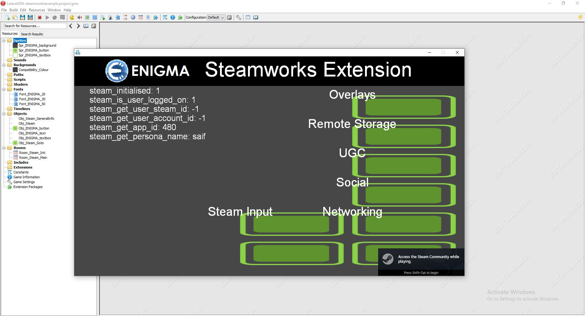

This blog post is related to my Google Summer of Code 2023 project: Steam Workshop SDK/Third Party Integration For ENIGMA .
I actually did some progress regarding the example game and here's my 2nd version:

and this is the final output I wish to reach:

Although I faced some problems because I am very bad at game development, everything is going well so far. My mentor Hugar really helped me a lot.
Before getting accepted to GSoC, my mentor Robert talked with me about something that I might face while working called ABI Compatibility Issues and he linked these resources: Compatibility considerations when mixing object files, IBM , and How is code created by different compilers able to be linked together, such as when using libraries?, Reddit . I have explained it in my Steam Workshop SDK/Third Party Integration For ENIGMA proposal so check it out if you are interested. The thing is I tested only a prototype of my project, I didn't dig deep into it, which by definition doesn't cause any ABI Compatibility Issues. I mentioned also that I don't expect any ABI Compatibility Issues to happen, but I was wrong. I was very confident because I tested it even with advanced C++ Classes and it worked fine just as rpjohnst said.
mingw mostly matches msvc's abi
you only run into problems if you start mixing c++ standard libraries or if you use relatively fancy language features in the API
you really don't want to be mixing object files but that's not what's happening here
rpjohnst — 02/03/2023 23:52
like digging into c++20 for example?
Saif — 02/03/2023 23:53
no even stuff like class methods
but it sounds like this is a C api
rpjohnst — 02/03/2023 23:53
I would assume it is
I'd be pretty shocked if it were some kind of C++ DLL
even if the API is C++, the ABI is probably still extremely boring C, locked down to stdcall
Josh — 02/03/2023 23:54
Remember the function I was testing before I got accepted into GSoC? The
SteamUser()->GetSteamID()? Well, this function won't work with ENIGMA. ENIGMA is
compiled with MinGW, and Steamworks SDK is compiled with MSVC. Of course, there are some
functions that will work fine, but this one fails. I need MSVC support for ENIGMA, in order to
work with Steamworks SDK without any problems. Back then, I wasn't aware of this issue, even
now, I debugged my code and nothing wrong with it.
// game_client.cpp
#include "steam_api.h"
CSteamID get_c_steam_id_local_user() {
return SteamUser()->GetSteamID();
}
// general.cpp
#include "game_client.h"
CSteamID steam_get_user_steam_id() {
return get_c_steam_id_local_user();
}
This error message showed up when used the debugger:
Thread 1 "MainThrd" received signal SIGSEGV, Segmentation fault.
0x00007ffe35878be5 in steamclient64!Steam_TerminateGameConnection ()
from C:\Program Files (x86)\Steam\steamclient64.dll
Let's view the stack trace:
(gdb) bt
#0 0x00007ffe35878be5 in steamclient64!Steam_TerminateGameConnection ()
from C:\Program Files (x86)\Steam\steamclient64.dll
#1 0x00007ffe357586a3 in steamclient64!Steam_TerminateGameConnection ()
from C:\Program Files (x86)\Steam\steamclient64.dll
#2 0x00007ff733c6886d in enigma_user::steam_get_user_steam_id() ()
#3 0x00007ff733b84bf7 in enigma::OBJ_Obj_Steam_GeneralInfo::myevent_draw() ()
#4 0x00007ff733bdc11b in draw_tiles() ()
#5 0x00007ff733bddfce in enigma_user::screen_redraw() ()
#6 0x00007ff733b862ea in enigma::ENIGMA_events() ()
#7 0x00007ff733b8f67e in enigma::enigma_main(int, char**) ()
#8 0x00007ff733b99c1a in WinMain ()
#9 0x00007ff733b812ee in __tmainCRTStartup ()
at C:/M/B/src/mingw-w64/mingw-w64-crt/crt/crtexe.c:272
#10 0x00007ff733b81406 in mainCRTStartup () at C:/M/B/src/mingw-w64/mingw-w64-crt/crt/crtexe.c:193
Only Segmentation fault not very helpful. I tried to look at other wrappers, the documentation, ChatGPT, and even searched online, and I found nothing. I thought at first that this issue is due to Steamworks API, but if that is the case then why the official example (SpaceWar) game works fine? or why the GMS's example (Demo) works fine as well? then it's an issue due to something with ENIGMA. I asked my mentor for help and he replied:
You can check this by writing a standalone program
Just call whatever you’re calling in a single cpp program and build it with mingw and see if it crashes
gfundies — 17/06/2023 16:52
This is exactly what I did before the bonding period. Let's leave ENIGMA for now and use
g++ main.cpp -o main.exe -Lredistributable_bin/win64 -lsteam_api64, and nothing
happens, the code works fine until it reaches SteamUser()->GetSteamID() function,
then nothing happens. I tried it again but using Git Bash terminal this time, and now I saw the
error message. I don't know why it didn't show up in VSCode terminal, but I am glad it showed
up. The error message is saying Segmentation fault. I asked my mentor again for
help and he replied:
@Saif you try same thing in msvc?
gfundies — 17/06/2023 18:42
I tried it in MSVC and it worked fine 😱. This is not a good thing by the way, actually, this is not good at all. Remember the ABI thing I mentioned earlier? well, it seems that we have got an ABI problem here.
I asked my mentor again for help but this time it was serious. Robert told me to wait for Josh's reply, and recommended installing Linux. fundies also told me to install Linux.
i still recommend you switch to linux
gfundies — 18/06/2023 22:25
@Saif i think you have 100% chance of success using linux 😛.
R0bert — 19/06/2023 01:28
These are some solutions to this problem I gathered from mentors' conversations:
- Add MSVC support for ENIGMA, but this is a project on its own.
- Decompile Steamworks SDK, but this is against the terms.
- We can't link to MinGW, so we will use RPC. Don't know what is this!
- Use Linux instead of Windows, and I will start with this one.
Let's try Linux then 😶.